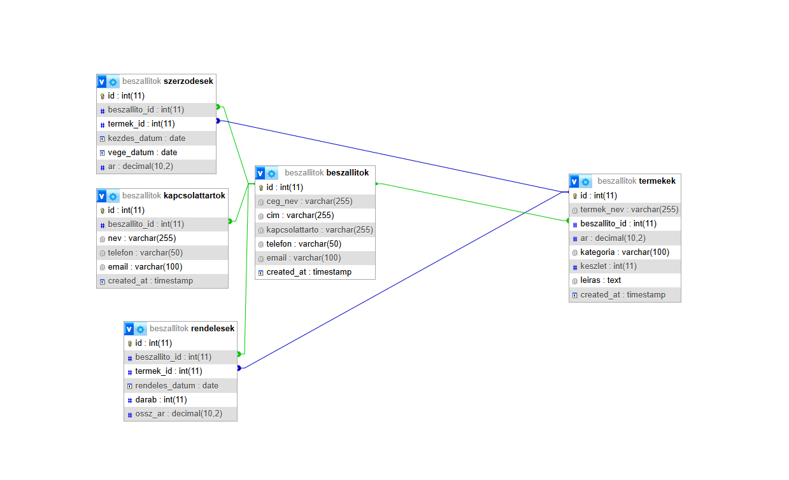
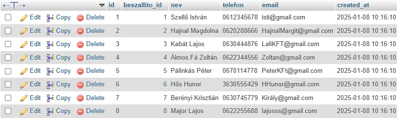
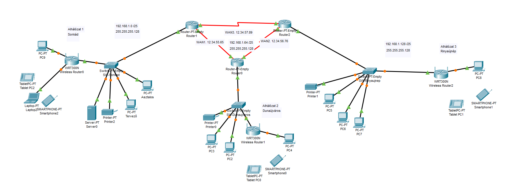
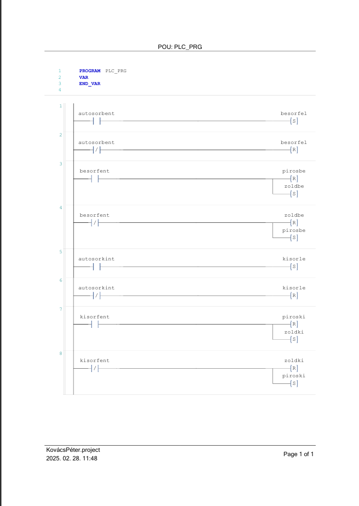
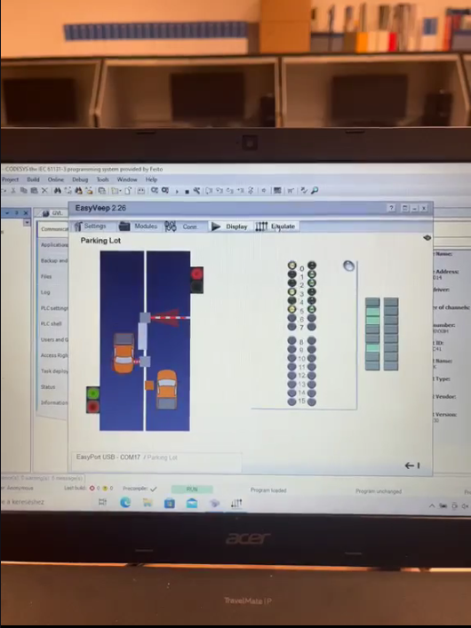
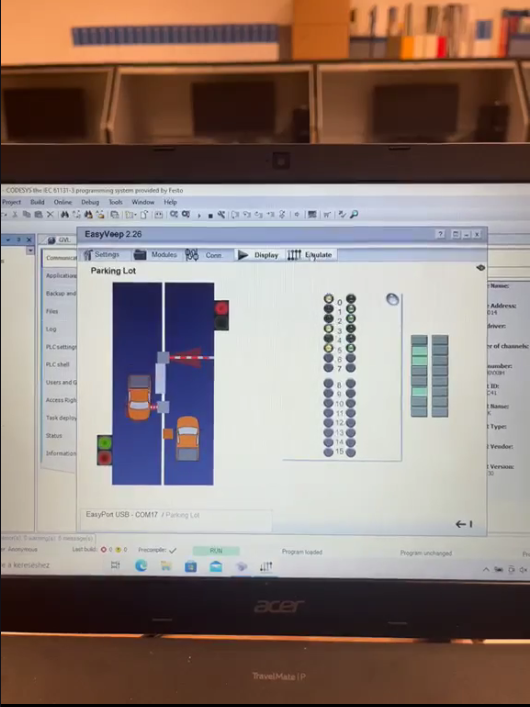
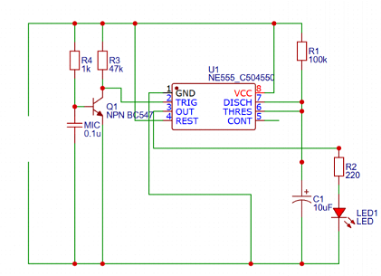

1. félév
Adatbáziskezelés alapjai
 Az Adatbáziskezelés alapjai tantárgy során elsajátítottam az adatbázisok tervezésének és kezelésének alapelveit, amelyek alapvetőek a modern informatikai rendszerek működéséhez. A tantárgy segített abban, hogy megértsem az adatbázisok szerkezetét és hatékonyan alkalmazzam a SQL nyelvet a különböző adatkezelési feladatokhoz.
Hálózatkezelés
A Hálózatkezelés tantárgy során megismertem a számítógépes hálózatok felépítését, működését és karbantartását, valamint a hálózati eszközök konfigurálását. A tantárgy segített abban, hogy magabiztosabbá váljak a hálózati problémák diagnosztizálásában és megoldásában, ezáltal szélesebb körű tudást szereztem a modern informatikai rendszerek kezelésében.
2. félév
PLC programozás
 

A PLC programozás tantárgy során elsajátítottam a programozható logikai vezérlők működését és alkalmazását ipari környezetben. A tantárgy segített abban, hogy megértsem a vezérlőrendszerek működését és képes legyek hatékony automatizálási megoldások tervezésére és megvalósítására.
Számítógépes szimuláció
A Számítógépes szimuláció tantárgy során megtanultam, hogyan modellezzek valós rendszereket és folyamatokat számítógépes eszközökkel, hogy előre jelezzem azok viselkedését. A tantárgy segített abban, hogy mélyebben megértsem a szimulációk alkalmazását különböző ipari és tudományos területeken, miközben fejlesztettem analitikai és problémamegoldó készségeimet.